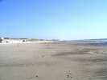
Arrivée vendredi soir à Stella. Une immense plage de sable au Nord et au Sud, pas de problème de place, sauf un peu à marée haute.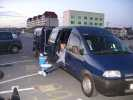
Yves est arrivé aussi, avec son nouveau train routier dessiné par lui ! Il peut maintenant loger à l'aise toute la famille, quoique, peut-être, ça devienne moins nécessaire, s'pas, Gaelle ?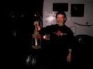
Michel sort son éclairage nocturne de haute technologie : pas de câble, pas de pile, pas d'accu, pas de panneau solaire... l'idéal, quoi !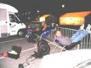
La bande des Pirates est arrivée, après montage des chars (pas toujours évident, hein, Michel !) une minute de repos bien méritée....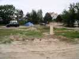
Une mauvaise nouvelle : l'organisation ne fournira aucune bouffe... Ca me rajeunit, ça fait bien 5 ans que personne n'avait osé, je croyais que ça n'existerait plus, alors que j'ai fait 256 km (aller seulement) pour tirer les ficelles... Allez, un effort, un petit sandwich, ou un repas en commun le samedi soir pour entretenir la convivialité, un geste, quoi ! On verra l'année prochaine... si je reviens. En compensation (?), camping (sic) ouvert avec ses paysages riants, ses douches payantes, etc. Si on m'avait demandé, j'aurais préféré le contraire...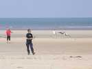
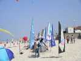
En tout cas, la plage est bien décorée, des bannières partout. Tellement, qu'il faut être sur la promenade pour voir les terrains ! Non, j'exagère, bien sûr... un peu.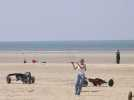
Minute féminine : Gaelle est devenue une tractionniste émérite, et pas que ça...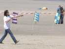
Et dans les concurrentes à la compète de tricks, il y a une femme, Laura Mastromoro, une italienne 3ème du championnat chez elle !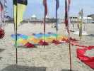
Oh, le joli Jardin du V..t. Mais non, ce sont des trains de petits deltas pilotables !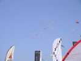
Ils vont faire une jolie démonstration, pour le public, c'est sûr que ça remplit mieux l'espace qu'un forcené tout seul qui refuse de voir son CV voler plus d'une seconde dans la même position !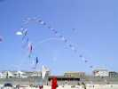
Côté gauche, c'est La Traction (Gwenn Ha Du, Pirates, Bernard et tutti quanti...) et un monofiliste (moi). Mais il y a aussi de grandes arches colorées de petits Eddies...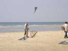
Mais il n'y a pas que des cervolistes sur la plage !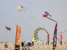
Chez les festivaliers, côté monofils, un grand bol bleu et jaune !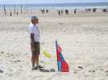
Mais au centre, il y a compétition de tricks, en solo, en paire, en équipe. Le terrain est rond, avec des juges munis de drapeaux et de sifflets. On a le droit de dépasser, mais pas trop longtemps...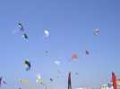
Pour couper la compète (c'est un peu dur pour le public), des interludes, assurés souvent par les Gwenn Ha Du et les Pirates. Les voiles ont un volume solide pour attirer l'attention, et on peut jouer avec le public...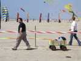
Mais il y a aussi des baigneurs, et il n'y a pas que les cervolistes pour trouver que le bazar est lourd à transporter dans le sable...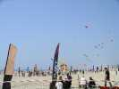
Il y a aussi lâcher de bonbons pour les enfants, comme d'habitude il vaudra mieux ne pas laisser ses CV dessous !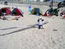
Je fais voler mon Albatros 2. Ca va bien mais le vent tombe un peu le samedi soir. Et un enfant de Gwenn Ha Du, Rémi, vient s'asseoir dessus, il n'a vraiment pas de tête !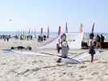
Une petite fille est très intriguée. Elle veut jouer avec lui ou peut-être le remplacer ?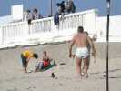
Mais il fait beau et presque chaud, les baigneurs se mettent en tenue légère, hyper-sexy...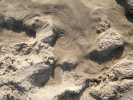
Les marées sont encore bien fortes et laissent des traces curieuses de leur passage sur la plage... Mais on finit par arrêter de voler pour regagner le camping.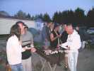
On n'est pas nourris, mais Yves des Pirates a eu la géniale idée (et la place, avec son nouveau train routier...) d'amener un barbecue d'escadron et des patates. Chacun apporte des saucisses, des merguez, des travers ou des côtes de porc, des cuisses de poulet et aussi à boire, largement même !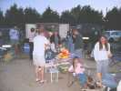
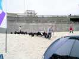
Le lendemain, nuit courte et réveil tardif des tractionnistes, mais la Nasa Cup attend...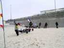
Ils arrivent par vagues successives, comme les Huns sur les plaines de France, traînant leurs chariots...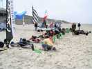
Mais s'alignent impeccablement au parc fermé, décoré de superbes bouquets arrachés aux balayeurs parisiens !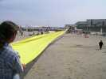
Le vent est trop faible le dimanche pour courir une Nasa Cup, reportée à plus tard. Alors les Gwenn Ha Du s'occupent...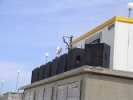
Pourtant la coupe Nasa trône à côté de l'autre sur l'estrade et le mur d'enceintes (remarque habituelle sur la sono : vaut mieux s'installer loin...).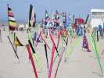
Sous les enceintes, les petites bannières de Dominique décorent la plage. Cette année, il n'y a que les sourds qui en voleront...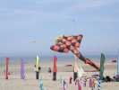
Côté monofils, Sylvain a sorti sa grande raie orange qui avait pas mal balayé l'année dernière... Elle a la queue qui traîne un peu par terre avec ce vent léger...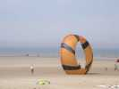
Il y a aussi un gros bol orange très massif, avec beaucoup de surface, il doit falloir le rentrer quand le vent forcit !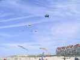
On assiste aussi à un vol multiple de deltas, dont 2 pyrodeltas amusants à pois jaunes ou bleus, antithèses l'un de l'autre...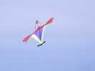
On voit aussi ce clown complexe et bariolé comme il doit l'être...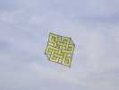
José a fabriqué ce Lung Ta avec un noeud celte. Il supporterait bien un vent plus fort, et se balance de droite à gauche...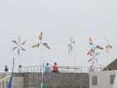
Dominique a de nouvelles éoliennes. Elles tourneront bien dès que le vent monte et résisteront bien au vent fort, mais aujourd'hui, c'est limite...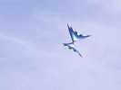
Il y a aussi ce papillon créé par Didier Ferment, et qui vole en statique ou en pilotable monofil. J'aime bien la déco de celui-là.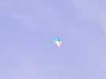
Faut-il classer celui-ci dans les deltas ? En tout cas, il vole bien même par vent très faible, et il est super-stable!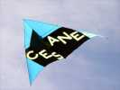
Publicité pour l'association d'élevage des ânes, qui fait aussi une fête... du cerf-volant !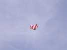
Un drakkar avec une grande voile...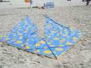
Et un des deltas à pois a fini par tomber, tant mieux, on le détaille mieux !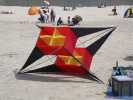
Cette XBox a volé en 2 exemplaires, dès que le vent a été meilleur... Son propriétaire (Damien Debril ?) pense rigidifier les boîtes centrales par une armature en croix car elles flottent pas mal...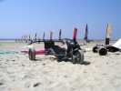
Les chars ne roulent pas, dommage, William a conçu celui-ci pour dépasser les 120 km/h !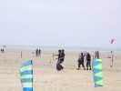
Mais la compétition de tricks a une fourchette de vent qui part de O (zéro) km/h, alors elle se déroule de toute façon. Normal, ils en font même en indoor, alors...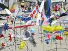
Il y aura aussi une manche du trophée Taranis, qui fait concourir des clubs sur 5 disciplines. Alors, on voit des JdV composites regroupant les créations des membres du club. On voit aussi des ballets composés de pilotables et de monofils simultanément, ça apporte un peu de sang nouveau à cette discipline...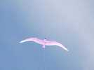
Quand le vent est léger, mon Spiralier/Goéland se plaît en l'air...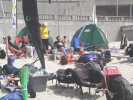
Mais côté traction, c'est le farniente généralisé, dommage...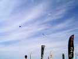
Michel Durup présentera son numéro de dual (2 cerfs-volants, un seul pilote), avec un ruban reliant les 2 cerfs-volants. Pas facile et très agréable à voir...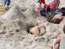
En tout cas, soleil et vent faible, les baigneurs sont contents, les enfants creusent comme des fous !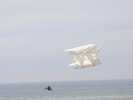
Dans le trophée Taranis, il y a aussi un concours de création. J'ai bien aimé ce CV (Cernoz ou quelque chose comme ça, Hubert devait m'envoyer le nom...) de Damien Debril, un Classique en bois et coton que je n'avais jamais vu...